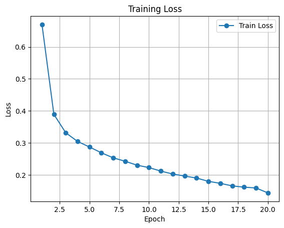
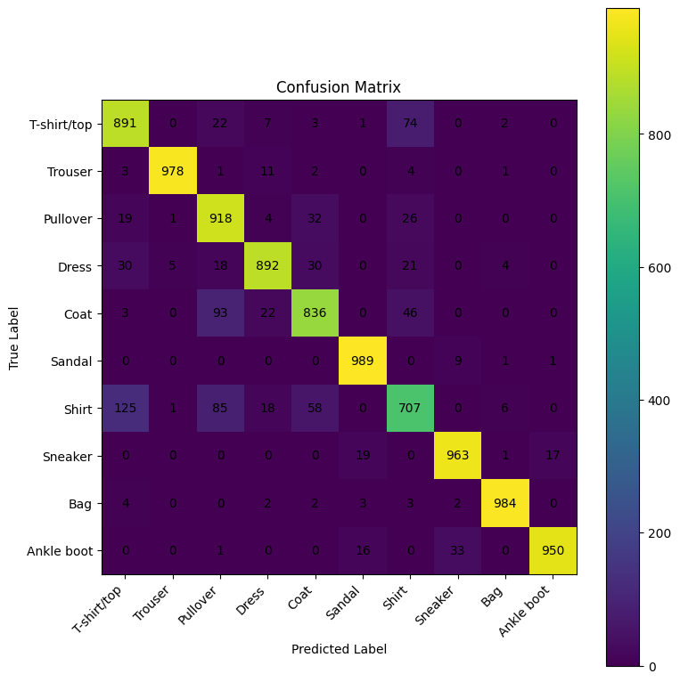

CH 01설계의 마지막 칸 — 출력층·손실함수를 세트로#
학습
네트워크 모델 설계는 ① 입력층(데이터 모양 맞추기) → ② 은닉층 아키텍처(정형=Dense, 이미지=CNN, 시계열·텍스트=RNN/Transformer) → ③ 활성화 함수(은닉층엔 ReLU) → ④ 출력층과 손실함수 순서로 내려간다. 마지막 칸이 가장 실수가 잦다. 출력층의 노드 수 · 활성화 함수 · 손실함수를 따로따로가 아니라 문제 유형에 맞춰 한 세트로 골라야 하기 때문이다.
| 문제 유형 | 출력 노드 수 | 출력층 활성화 | 손실함수 |
|---|---|---|---|
| 회귀 (연속값) | 1 (또는 목표 수) | 없음 (Linear) | MSE |
| 이진 분류 (0/1) | 1 | Sigmoid | Binary Cross-Entropy |
| 다중 분류 (클래스 N개 중 하나) | N (예: 10) | Softmax | Cross-Entropy |
의문 → 가설
관찰
한 가지가 먼저 눈에 걸렸다. PyTorch CNN의 마지막 줄은 nn.Linear(128, 10)로 끝나고 Softmax가 보이지 않는다.
표에는 다중분류 출력층 활성화가 Softmax라고 적혀 있는데도 그렇다. 이건 실수가 아니라 PyTorch의 약속이었다 —
nn.CrossEntropyLoss가 내부에서 LogSoftmax + NLLLoss를 함께 처리하므로, 출력층에 Softmax를 또 붙이면 안 된다.
즉 모델의 마지막 출력은 확률이 아니라 점수, 곧 logits다.
nn.Softmax를 붙이고 다시 CrossEntropyLoss를 쓰면 Softmax가 두 번 적용된다.
같은 이유로 이진 분류의 BCEWithLogitsLoss도 내부에 Sigmoid를 포함하므로 출력층에 Sigmoid를 따로 붙이지 않는다.
"활성화가 손실함수 안에 숨어 있다"는 것이 PyTorch 손실함수의 함정 1번.
CH 02손실함수를 손으로 펴 보기#
학습
손실함수는 "모델이 얼마나 틀렸는지"를 하나의 숫자로 표현하는 함수다. 모델은 이 숫자를 줄이는 방향으로 가중치를 고친다. 대표적인 셋을 식으로 적으면 — 회귀의 MSE는 오차를 제곱해 평균한다.
MSE = (1/n) Σ (y − ŷ)²
이진 분류의 BCE는 정답일 확률의 로그를 벌점으로 삼는다.
BCE = −(1/n) Σ [ y·log(ŷ) + (1−y)·log(1−ŷ) ]
다중 분류의 CrossEntropy는 더 단순하다 — Softmax로 만든 확률 중 정답 클래스의 확률만 뽑아 음의 로그를 취한다.
CE = −log( P(정답 클래스) )
시행
식이 맞는지, 손 계산과 PyTorch 내장 함수가 같은 값을 내는지 확인한다. CrossEntropy는 F.log_softmax로
로그확률을 만든 뒤 정답 인덱스의 값을 골라 평균하면, nn.CrossEntropyLoss와 같아야 한다.
# path : from_colab_deep_learning/0611-s/pytorch_loss_functions.ipynb (발췌)
import torch, torch.nn as nn, torch.nn.functional as F
# 3개 샘플 · 4개 클래스의 logits (Softmax 전 점수)
logits = torch.tensor([[2.0, 1.0, 0.1, 0.0],
[0.5, 2.5, 0.3, 0.2],
[0.1, 0.2, 3.0, 0.4]])
target = torch.tensor([0, 1, 2]) # 정답 클래스 번호 (one-hot 아님!)
# 손 계산: log_softmax 후 정답 인덱스만 뽑아 -평균
log_prob = F.log_softmax(logits, dim=1)
manual = -log_prob[torch.arange(len(target)), target].mean()
# 내장 함수
builtin = nn.CrossEntropyLoss()(logits, target)
print(manual, builtin) # 두 값이 일치해야 한다결론(중간)
−log(정답 확률) 한 줄이다. 정답에 1.0(100%)을 줬으면 −log(1)=0 (벌점 0),
정답 확률이 0에 가까워질수록 벌점은 무한대로 치솟는다. 그리고 PyTorch의 CrossEntropyLoss는
정답을 one-hot이 아니라 0~9 정수 라벨로 받는다 — 내부 LogSoftmax + NLLLoss 구조의 직접적인 귀결이다.
CH 03다중분류에 MSE를 쓰면 무엇이 둔해지나#
학습
벌점(손실)이 크다는 건 단순한 "틀렸다" 알림이 아니다. 역전파의 출발점이 그 손실값이고, 손실을 각 가중치로 미분한 값(기울기)이 옵티마이저가 가중치를 얼마나 세게 고칠지를 정한다. 그래서 질문은 이렇게 좁혀진다 — "틀린 확신"일 때 손실의 기울기가 큰가 작은가.
의문 → 가설
−log 곡선이 수직에 가깝게 가팔라져 기울기가 매우 크다 →
옵티마이저가 그 가중치를 대폭 고친다. 반대로 MSE를 분류 확률에 씌우면, 확률이 양 끝(0·1)으로 갈수록 (Softmax/Sigmoid를 거친 뒤의)
기울기가 오히려 납작해져 크게 틀려도 수정 신호가 약하게 전달될 것이다. 그래서 분류에서 MSE는 학습이 둔하다.
관찰
식으로 보면 분명하다. 정답 확률을 99%로 맞히면 CE 손실은 거의 0이고 곡선이 평평해 기울기도 0에 가깝다 — "잘하고 있으니 건드리지 마라". 정답 확률을 1%로 잘못 주면 CE 손실이 폭발하고 그 지점의 경사가 가팔라, 역전파 테이블(가중치별 기울기 저장소)에 큰 숫자가 적힌다 — "이 가중치 때문에 난리 났다, 대폭 수정해". MSE에는 이 "틀린 확신에 가하는 큰 기울기"가 없다. 분류 확률에 MSE를 씌우면 크게 틀린 구간에서 신호가 약해 학습이 느려진다.
CH 04FashionMNIST CNN을 CrossEntropy로 학습#
학습
FashionMNIST는 28×28 흑백 의류 이미지 10클래스(티셔츠·바지·풀오버 … 앵클부츠) 분류 문제다.
CH 01의 표대로 출력층 10노드 + CrossEntropy 세트로 맞춘다. 모델 구조는
Conv2d(1→32, k2, padding='same')→ReLU→MaxPool2 → Conv2d(32→64, k2, same)→ReLU→MaxPool2 → Flatten → Linear(3136→128)→ReLU → Linear(128→10).
마지막은 logits(Softmax 없음)이고, 손실은 CrossEntropyLoss, 옵티마이저는 Adam(lr=0.001)이다.
입력 28×28이 풀링을 두 번 거치며 14×14 → 7×7로 줄고, 채널 64개라 Flatten 입력이 64·7·7 = 3136이 된다.
합성곱에 padding='same'을 준 건 합성곱만으로는 가장자리가 깎여 크기가 줄기 때문 — 크기 축소는 풀링에게 맡기고,
합성곱층은 정보 손실 없이 특징만 뽑게 한다.
시행
# path : from_colab_deep_learning/0611-s/fashion_pytorch_cnn.ipynb (발췌)
class FashionCNN(nn.Module):
def __init__(self):
super().__init__()
self.conv1 = nn.Conv2d(1, 32, kernel_size=2, padding="same")
self.pool1 = nn.MaxPool2d(kernel_size=2)
self.conv2 = nn.Conv2d(32, 64, kernel_size=2, padding="same")
self.pool2 = nn.MaxPool2d(kernel_size=2)
self.relu = nn.ReLU()
self.fc1 = nn.Linear(64 * 7 * 7, 128) # 3136 → 128
self.fc2 = nn.Linear(128, 10) # 10 클래스 logits
def forward(self, x):
x = self.pool1(self.relu(self.conv1(x)))
x = self.pool2(self.relu(self.conv2(x)))
x = x.view(x.size(0), -1) # Flatten
x = self.relu(self.fc1(x))
return self.fc2(x) # Softmax 없음 → logits
criterion = nn.CrossEntropyLoss() # 정답은 0~9 정수 라벨
optimizer = optim.Adam(model.parameters(), lr=0.001)테스트
학습용 데이터 개수: 60000 평가용 데이터 개수: 10000 샘플 이미지 텐서 모양: torch.Size([1, 28, 28]) 샘플 라벨: 9 (Ankle boot) CNN 학습 시작 Epoch [01/20] Loss: 0.6698 Accuracy: 76.61% Epoch [02/20] Loss: 0.3893 Accuracy: 85.84% Epoch [05/20] Loss: 0.2874 Accuracy: 89.71% Epoch [10/20] Loss: 0.2232 Accuracy: 91.80% Epoch [15/20] Loss: 0.1802 Accuracy: 93.44% Epoch [20/20] Loss: 0.1442 Accuracy: 94.79% 총 학습 시간: 1391.6초

결론(중간)
CH 05혼동행렬 — 손실이 줄어도 헷갈리는 클래스#
학습
정확도 한 숫자는 "어디서 틀리는지"를 숨긴다. 혼동행렬은 행=실제 클래스, 열=예측 클래스로, 대각선이 정답이고 대각선 밖이 어떤 클래스를 어떤 클래스로 헷갈렸는지를 드러낸다.
테스트
최종 테스트 손실값: 0.2558 최종 정확도: 91.08% F1 점수: 0.911 혼동 행렬 (행=실제, 열=예측) [[891 0 22 7 3 1 74 0 2 0] # 0 T-shirt [ 3 978 1 11 2 0 4 0 1 0] # 1 Trouser [ 19 1 918 4 32 0 26 0 0 0] # 2 Pullover [ 30 5 18 892 30 0 21 0 4 0] # 3 Dress [ 3 0 93 22 836 0 46 0 0 0] # 4 Coat [ 0 0 0 0 0 989 0 9 1 1] # 5 Sandal [125 1 85 18 58 0 707 0 6 0] # 6 Shirt [ 0 0 0 0 0 19 0 963 1 17] # 7 Sneaker [ 4 0 0 2 2 3 3 2 984 0] # 8 Bag [ 0 0 1 0 0 16 0 33 0 950]] # 9 Ankle boot

관찰
전체 test 정확도 91.08%, F1 0.911로 괜찮지만, 행마다 편차가 크다. 가장 약한 건 Shirt(클래스 6)로 1000개 중 707개만 맞혔고, 125개를 T-shirt(0), 85개를 Pullover(2), 58개를 Coat(4)로 헷갈렸다 — 모두 비슷하게 생긴 상의류다. 반대로 Trouser(978)·Sandal(989)·Bag(984)처럼 형태가 뚜렷한 클래스는 거의 다 맞혔다. test 손실 0.2558이 train 막판 0.1442보다 높은 것도 일반화 갭의 표시지만, 91%대 정확도면 baseline으로 충분하다.
결론(중간)
CH 06정리 — 출력층·손실함수가 학습을 가르치는 방식#
결론
오늘의 한 줄 질문 — "출력층·손실함수를 무엇으로 고르느냐가 분류 학습을 어떻게 가르나, 다중분류에 MSE를 쓰면?" — 에 대한 답을 정리한다.
- 세트로 고른다 — 회귀=Linear+MSE, 이진=Sigmoid+BCE, 다중=Softmax+CrossEntropy. 노드 수·활성화·손실은 한 묶음이다.
- 활성화는 손실함수 안에 숨는다 — PyTorch의
CrossEntropyLoss는 LogSoftmax+NLL을,BCEWithLogitsLoss는 Sigmoid를 포함한다. 출력층은 logits로 끝낸다. - 손실값 = 역전파의 출발점 — 손실의 기울기 크기가 곧 가중치 수정강도다. CrossEntropy는 "틀린 확신"에 큰 기울기를 주지만, 분류 확률에 MSE를 씌우면 양 끝에서 신호가 납작해져 학습이 둔하다 → 다중분류에 MSE는 부적합.
- CE = −log(정답 확률) — 정답에 1.0이면 벌점 0, 0에 가까우면 벌점 폭발. 정답은 one-hot이 아닌 정수 라벨.
- 정확도는 혼동행렬과 함께 본다 — FashionMNIST CNN은 test 91.08%·F1 0.911이지만, 닮은 상의류(Shirt)에서 오류가 몰렸다.
📚 근거 출처
- 실습 코드 —
from_colab_deep_learning/0611-s(pytorch_loss_functions · fashion_pytorch_cnn) - 강의 PDF — 딥러닝_네트워크모델설계
- 공식 문서 — PyTorch 손실함수(CrossEntropyLoss·MSELoss)